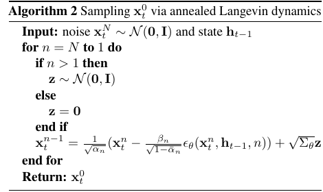
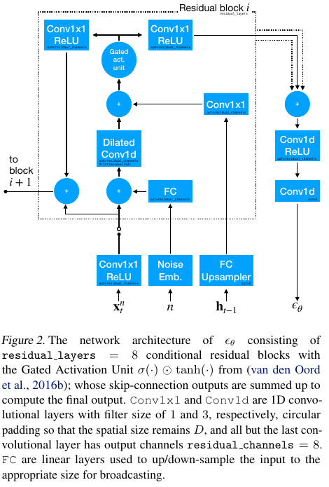
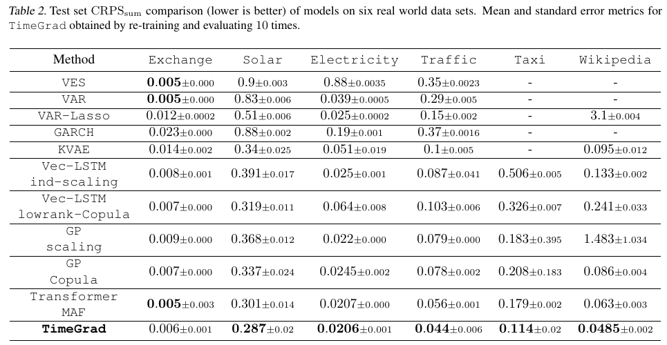
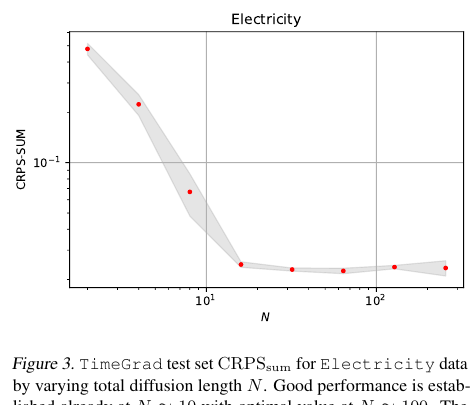

Why TimeGrad exists
This paper is not mainly asking for a slightly better point forecast. It asks how to generate a full future probability distribution for many correlated time series at once.
The paper's core idea
Problem
A future time step is a high-dimensional vector, not one isolated number. Solar sites, traffic sensors, and web pages move together.
Gap
Many models assume an output family such as Gaussian, copula, or flow. That makes density computation easier, but it can restrict the shape of the future distribution.
Move
TimeGrad uses a conditional diffusion model at each future time step.
Translate the claim
Use an autoregressive RNN state
to condition a denoising diffusion model
and sample the multivariate future.The RNN tells the model what situation the series is currently in.
The diffusion network tells the model how to turn noise into a plausible future vector.
Repeat the sampling process many times, and uncertainty becomes visible as many possible futures.
A team only needs tomorrow's average electricity demand as one number. Which TimeGrad advantage matters least?
Diffusion becomes a forecasting engine
The diffusion component learns a reverse process: start from noise, then repeatedly denoise under the current time-series context to generate a future sample.
One future step as a small generation task
The compact equation
x_n = sqrt(alpha_bar_n) x_0
+ sqrt(1 - alpha_bar_n) epsilon
epsilon_theta(x_n, h, n) -> epsilonTake the true vector and mix in Gaussian noise according to the diffusion level.
The diffusion level n controls how damaged the vector is.
The model learns to recover the noise while using the RNN state as context.
x_0the clean observed vector at one time stephthe RNN hidden state summarizing historynthe current diffusion noise levelWhy train a noise predictor instead of directly outputting only a mean forecast?
Training and sampling mirror each other
Training asks: can the network identify the noise that was added? Sampling asks: can the network remove noise step by step to create a future?
Figure 1: the full method in one picture

Bottom: the RNN receives the previous observation and covariates.
Middle: hidden state h conditions the diffusion reverse model.
Top: the fixed forward chain adds noise; the learned reverse chain removes it.
Algorithm 2 in plain language

Start from random noise at the highest diffusion level.
Move backward through the noise levels and use epsilon_theta to choose a denoising direction.
Except for the final step, inject a small random term to preserve uncertainty.
The output is one sampled future vector for time t.
The model needs many reverse steps, and often many sampled trajectories. That is why the ablation on diffusion length N matters.
If inference uses only 5 sampled trajectories instead of 100, what is most likely to degrade first?
Architecture breakdown
TimeGrad has two cooperating parts: an autoregressive context model and a conditional denoising network.
Click the components
Forecasting pipeline
Residual block details

The noisy vector enters through convolutional layers.
The diffusion index n is embedded so the network knows the current noise level.
The RNN state h is injected as conditioning information.
Residual and skip paths help deep denoising blocks remain trainable.
If h_{t-1} is removed from the denoising network, what is the cleanest failure interpretation?
How the evidence works
The experiments support TimeGrad as a strong probabilistic forecaster, especially when evaluated with distribution-aware metrics.
First inspect the data scale

Dimension D ranges from 8 to 2000.
Frequencies include daily, hourly, and 30-minute data.
Prediction lengths are 24 or 30 steps, so samples must form full future paths.
Then read the benchmark table

Claim: flexible sampling improves multivariate probabilistic forecasts.
Metric: CRPS_sum, a distribution score.
Result: TimeGrad is best or near-best on most datasets.
Caveat: the table does not measure latency or memory cost.
Ablation: how many diffusion steps?

Quality improves sharply as N grows from very small values.
The paper reports good performance already around N = 10.
The best setting is around N = 100, but larger is not automatically better.
A company wants to deploy TimeGrad online. What evidence is most missing from Table 2?
Limits, reproduction, and reuse
The method is powerful, but its evidence travels with its assumptions: autoregressive sampling, baseline choices, preprocessing, and diffusion hyperparameters.
Prediction intervals help, but they are not the full proof

Blue lines are observed values; green bands are prediction intervals.
The figure shows that the model outputs uncertainty bands, not only a median curve.
It is qualitative evidence. The stronger claim still depends on CRPS across datasets.
Reproduction checklist
Datadataset versions, rolling windows, scaling, missing values, train/validation/test boundariesModelLSTM hidden size, residual blocks, dilation schedule, embeddings, lag featuresDiffusionnoise schedule, diffusion length N, sampled trajectories S, random seedsEvalCRPS_sum implementation, baseline implementations, repeated-run statisticsWhat this paper does not prove
It does not prove that TimeGrad is always faster, always better in every domain, or already robust to extreme events and distribution shift. It proves that autoregressive diffusion forecasting is a strong benchmark method under the paper's tested setup.